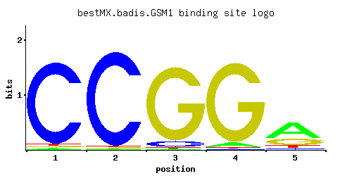

← All factors / TF RECORD
GSM1
YJL103C
Putative zinc cluster protein of unknown function; proposed to be involved in the regulation of energy metabolism, based on patterns of expression and sequence analysis
01 / RECOMMENDED MATRIX
Best-performing DNA-binding model.

Fisher’s P-value0.0006545
Information content8.519
Max PWM score7.18
Recommended cutoff3.68
View and copy the recommended matrices ↘
Position frequency matrix (PFM)
A | 0.02 0.01 0.01 0.05 0.58 C | 0.94 0.97 0.07 0.01 0.07 G | 0.02 0.01 0.91 0.93 0.26 T | 0.02 0.01 0.01 0.01 0.09
Position count matrix (PCM)
A | 2 1 1 5 57 C | 94 97 7 1 7 G | 2 1 91 93 26 T | 2 1 1 1 9
Position weight matrix (PWM)
A | -2.77 -3.47 -3.47 -1.86 0.59 C | 1.65 1.68 -0.94 -2.89 -0.94 G | -2.20 -2.89 1.62 1.64 0.37 T | -2.77 -3.47 -3.47 -3.47 -1.27
02 / COMPARATIVE BENCHMARKS
Alternative candidate matrices 2
Historical matrix candidates from the original ScerTF database. Expand a source to inspect its original logo, scores, and matrix values.
GSM1Zhu et. al.P = 0.6877View matrix ↘
GSM1Zhao and StormoP = 0.004516View matrix ↘
03 / EXPERIMENTAL CONTEXT
Gene-level annotations and interactions.
Genes bound in ChIP-chip experiments 1 genes
No Data
Genes affected by TF deletion 1 genes
No Data
Genes supported by both experiments 1 genes
No Data
Predicted TF–TF partners 16 genes
AFT2, GIS1, MIG3, MSN2, MSN4, PDR3, PDR8, PHD1, RGM1, RGT1, RSC3, STP1, SUT1, SUT2, USV1, YPR196W